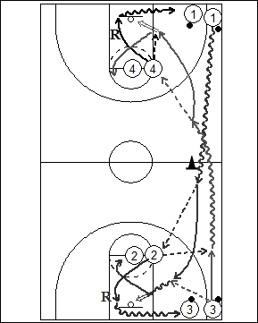

Catégorie : ECHAUFFEMENT (Ech-015)
Déroulement
- Quatre files de joueurs. Deux files avec ballons aux baselines, face-à-face. Deux files sans ballon à hauteur des lignes de lancers-francs.
- Le premier joueur de la file 1 part en dribble. Après la ligne médiane, il effectue la passe au premier joueur de la file 2 et reçoit le ballon du premier joueur de la file 3 pour réaliser un lay-up. Aussitôt après sa passe au premier joueur de la file 1, le premier 3 démarre, reçoit la passe du premier 2, dribble jusqu’à la ligne médiane, passe au premier joueur de la file 4 qui lui remet le ballon pour un lay-up. Le deuxième joueur de la file 1 démarre aussitôt et le drill continue.
- Après son lay-up, 1 va en 2; après sa passe à 3, 2 fait le rebond de 1 et va dans la file 3; après son lay-up, 3 va en 4; 4 fait le rebond de 3 et va en dribble dans la file 1.
Coaching points
- Insister pour que le deuxième joueur de la file 1 ne parte que lorsque le lay-up de 3 est réalisé.